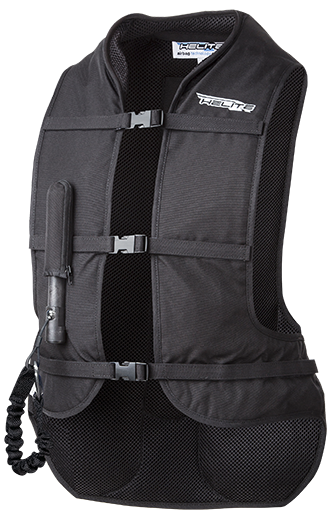

Le nouvel AirBag de la marque Helite, permet de vous protéger de façon considérable. Vous allez me dire que les gilets de protection existent déjà, oui, mais l'airbag Hélite assure un protection contre des chocs encore plus violents ! En effet, l'air amortit 3 fois plus le choc que de simples mousses renforcées qu'on a l'habitude de voir.
Vous avez encore des doutes sur la qualité et la practicité de ce protège dos ? Quand est-ce que ça peut vraiment être utile ? La discipline principale dans laquelle il peut vous sauvez la vie : LE CROSS ! Gardez en tête les nombreux cavaliers sont mort durant des épeuvres de haut niveau...notamment Olivia

Comment ça marche ? Il vous suffit d'accrocher votre protection à votre selle grâce au cable prévu à cet effet. En cas de chute, le fait de tirer sur le cable déclenche le gonflement de l'airbag; vous serez donc protégé avant même d'avoir atteind le sol !